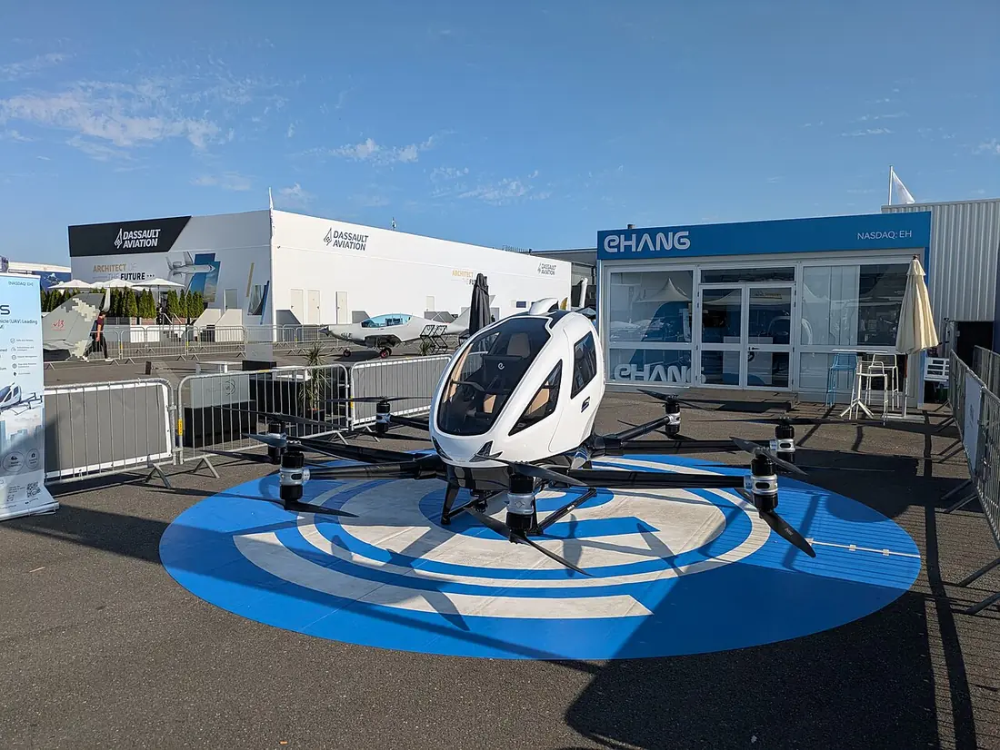
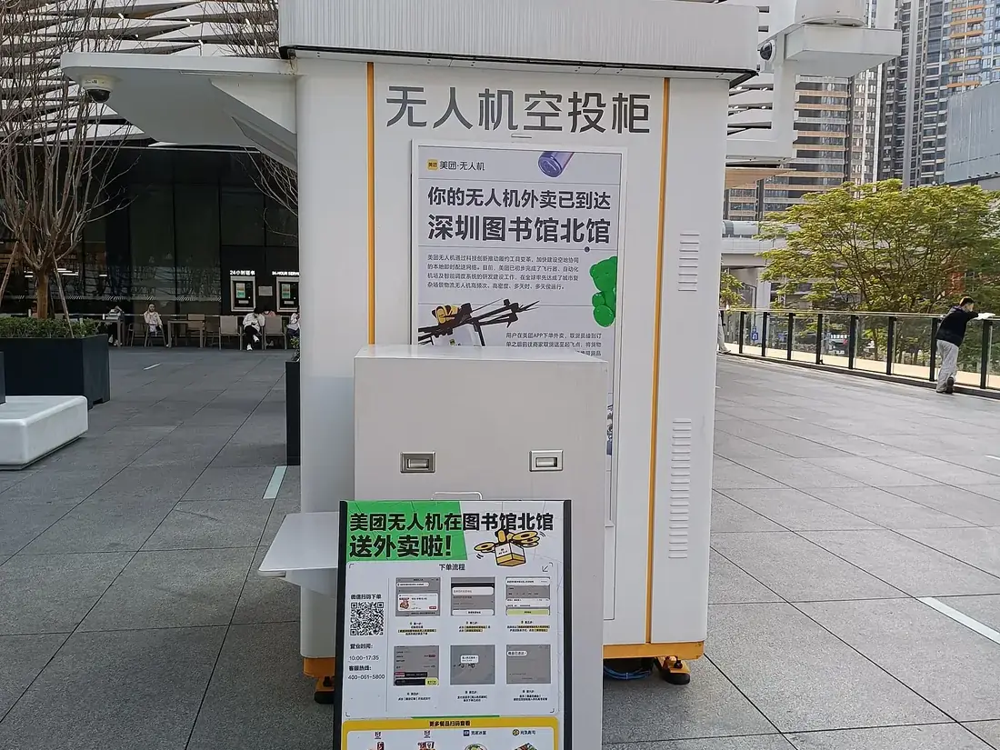
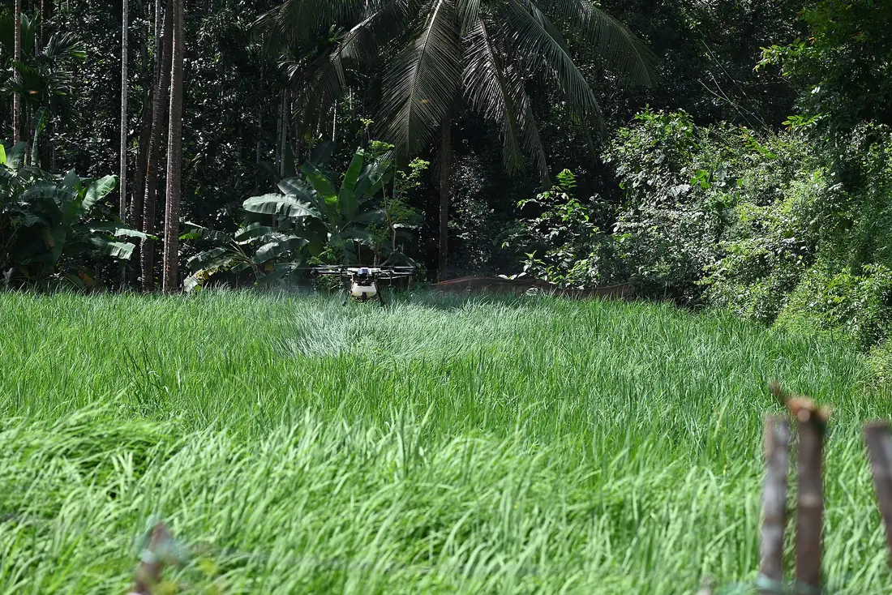
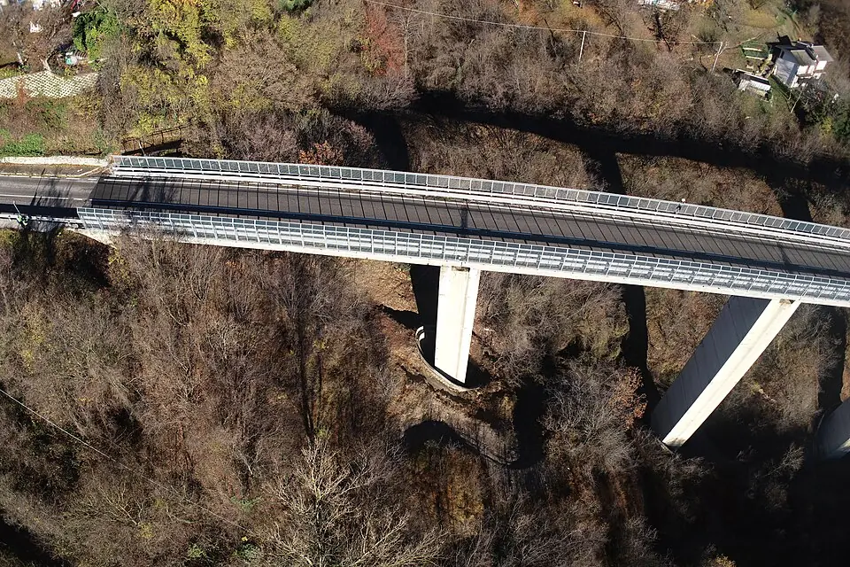
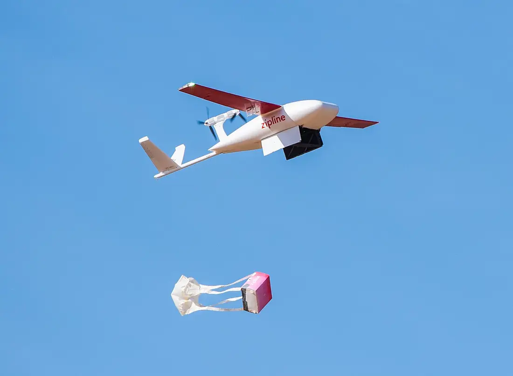
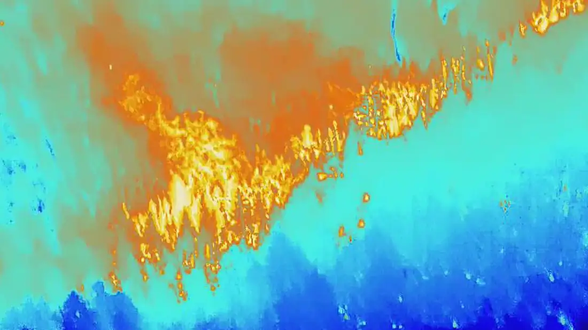

Propuesta de ley · Tamaulipas · 2026
Drones que revisan cultivos, inspeccionan puentes o llevan medicinas a la sierra. Esta es una propuesta para que Tamaulipas prepare el terreno a esa industria, sin meterse en lo que le toca a la Federación.

Aeronave eléctrica para pasajeros EHang 216-S, exhibida en París en 2025. Foto: Artvill, CC BY 4.0.
En China le llaman 低空经济: economía de baja altitud. Agrupa las actividades que dependen de vuelos cerca del suelo: drones que reparten, fumigan, vigilan o inspeccionan y, en los próximos años, aeronaves eléctricas para pasajeros.
Pero la economía no está solo en el aire. También está en tierra: fabricantes, talleres, operadores, empresas de datos y escuelas que forman a la gente.

Casillero para entregas por dron en Longhua, Shenzhen, febrero de 2025. Foto: ALB 302 AOE woapsing, dominio público (CC0).
En febrero de 2024 entró en vigor en Shenzhen el primer reglamento de su tipo en China, dedicado a promover la economía de baja altitud. Al cierre de ese año, la ciudad tenía 250 rutas de baja altitud y 483 puntos de despegue y aterrizaje para drones.
Desde julio de 2026, la Ley de Aviación Civil de China tiene un capítulo dedicado a este sector. Estados Unidos y Europa lo regulan sobre todo como un asunto de seguridad aérea. China lo trata como industria.
En México, el espacio aéreo y todo lo relacionado con volar corresponde a la Federación, a través de la Agencia Federal de Aviación Civil (AFAC). Un estado no puede autorizar vuelos ni certificar drones.
Pero casi todo lo que hace crecer a esta industria ocurre en tierra, y ahí el estado sí tiene herramientas. Shenzhen hace lo mismo: su reglamento deja el vuelo a la autoridad nacional y se ocupa de lo demás.

Dron agrícola aplicando sobre un cultivo en la India. Foto: Shreesha Sharma, CC BY-SA 4.0.
Mide la salud del cultivo, ubica plagas como el pulgón amarillo y aplica producto solo donde hace falta. Así se gasta menos y el problema se detecta antes de que se extienda.
Tamaulipas es el primer productor de sorgo del país, y San Fernando es el municipio con más superficie sembrada.

Vista desde un dron durante la inspección de un puente en Italia. Foto: FedericaGaspari, CC BY-SA 4.0.
Un dron recorre la estructura de un puente internacional, una línea eléctrica o un ducto. Con miles de fotos se arma un modelo en 3D que muestra dónde hay grietas o corrosión. La inspección se hace sin andamios y sin detener el tráfico.

Un dron de Zipline suelta un paquete con paracaídas. Foto: Roksenhorn, CC BY-SA 4.0.
Un centro de salud en Miquihuana necesita un medicamento que no tiene. En lugar de esperar el siguiente viaje por carretera, un dron lo lleva desde Ciudad Victoria. De regreso trae muestras para el laboratorio.
Este tipo de servicio ya funciona en países como Ruanda, Ghana y Estados Unidos.

Imagen térmica de un incendio forestal tomada con dron en Oregón, Estados Unidos. Foto: Bureau of Land Management, dominio público.
En temporada de incendios, un dron con cámara térmica patrulla la sierra. Si detecta un punto caliente, manda las coordenadas a protección civil, y la brigada sabe a dónde ir antes de subir.
Tras un ciclón, los drones sobrevuelan la costa, ubican caminos cortados y viviendas dañadas y ayudan a decidir a dónde mandar primero la ayuda.
El resto del año, el mismo equipo sirve para vigilar playas y manglares o para recorridos turísticos, siempre con permiso federal.
La propuesta contempla también un consejo estatal con gobierno, empresas y universidades para dar seguimiento.
La primera empresa aeronáutica llegó a Querétaro en 1998. Hoy operan ahí más de 80 empresas del sector, entre ellas Safran, Bombardier, Airbus y GE Aerospace.
El estado lo logró con parques industriales, una universidad aeronáutica y promoción, sin regular el vuelo. Una ley de fomento le daría a Tamaulipas una ruta parecida, con reglas claras desde el inicio, en un sector que apenas empieza.
Ya están escritos los dos primeros capítulos: qué regula la ley, qué significan sus términos, la cláusula que reconoce que el vuelo es federal y el reparto de tareas entre el estado y los municipios.
Faltan, entre otros, los capítulos de incentivos, suelo, formación, proyectos piloto y datos, además de una estimación de costos. El siguiente paso es revisarla con las dependencias estatales y con quienes trabajan en el sector.
Pon a prueba la idea
Toca cada pregunta para ver la respuesta.
Preguntas frecuentes
Respuestas cortas a las dudas más comunes.
Para cerrar
El sector apenas empieza en México. Los estados que pongan reglas claras primero tendrán ventaja para atraerlo.
Documento de divulgación de una propuesta en elaboración. No es un documento oficial del Gobierno del Estado de Tamaulipas. Las escenas marcadas como ilustrativas muestran usos posibles, no servicios que operen hoy en el estado.